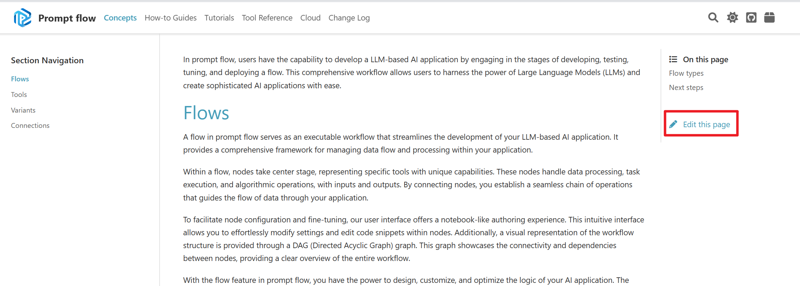

Promptflow documentation contribute guidelines#
This folder contains the source code for prompt flow documentation site.
This readme file will not be included in above doc site. It keeps a guide for promptflow documentation contributors.
Content#
Below is a table of important doc pages.
Category |
Article |
|---|---|
Quick start |
|
Concepts |
|
How-to guides |
How to initialize and test a flow |
Tools reference |
LLM tool |
Writing tips#
Reach the doc source repository by clicking
Edit this pageon any page. Please use :::{admonition} for experimental feature or notes, and admonition with dropdown for the Limitation Part.
Please use ::::{tab-set} to group your sdk/cli example, and put the cli at first. Use :sync: to sync multiple tables .
If you are unclear with the above lines, refer to get started to see the usage.
Add gif: Use ScreenToGif to record your screen, edit and save as a gif.
Reach more element style at Sphinx Design Components.
Preview your changes#
Local build: We suggest using local build at the beginning, as it’s fast and efficiency.
Please refer to How to build doc site locally.
FAQ#
Adding image in doc#
Please use markdown syntax  to reference image, because the relative path of image will be changed after sphinx build, and image placed in html tags can not be referenced when build.
Draw flow chart in doc#
We recommend using the mermaid, learn more from the mermaid syntax doc
Recommend to install vscode extension to preview graph in vscode.